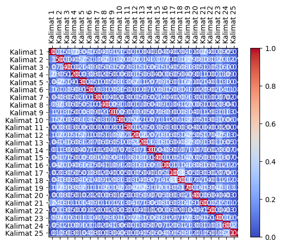

Crawling Berita#
#melakukan web scraping pada halaman berita yang berasal dari URL
import requests
from bs4 import BeautifulSoup
import nltk
# Unduh konten halaman web berita
url = "https://www.bbc.com/indonesia/articles/cxrvr59632eo"
response = requests.get(url)
html = response.text
# Parsing halaman web menggunakan BeautifulSoup
soup = BeautifulSoup(html, 'html.parser')
# Ekstraksi teks dari elemen-elemen yang berisi berita
article = soup.find('div', class_="bbc-1cvxiy9") # Sesuaikan dengan struktur HTML halaman web berita
# Periksa apakah elemen article ada sebelum mencoba mengambil teksnya
if article is not None:
article_text = article.get_text()
# Tokenisasi teks menjadi kalimat menggunakan nltk
nltk.download('punkt') # Pastikan Anda sudah mengunduh tokenisasi kalimat nltk
sentences = nltk.sent_tokenize(article_text)
# Cetak kalimat-kalimat
for sentence in sentences:
print(sentence)
else:
print("Elemen berita tidak ditemukan")
Apa tujuan akhir invasi darat Israel ke Gaza?
Sumber gambar, ReutersKeterangan gambar, Militer Israel telah memanggil sejumlah tentara cadangan untuk bertempur melawan Hamas.1 November 2023Paul KirbyBBC NewsPara pemimpin Israel telah menegaskan bahwa kelompok milisi Palestina, Hamas, akan dimusnahkan dari muka bumi dan Gaza tidak akan pernah kembali seperti semula.“Setiap anggota Hamas adalah orang mati,” kata Perdana Menteri Benjamin Netanyahu setelah kelompok milisi tersebut membunuh lebih dari 1.300 orang dalam serangan yang tak terduga ke Israel pada 7 Oktober.Tujuan Operasi Pedang Besi – operasi serangan balasan Israel atas serangan Hamas – nampaknya jauh lebih ambisius dibandingkan apa pun yang direncanakan militer Israel di Gaza sebelumnya.
Lewatkan Artikel-artikel yang direkomendasikan dan terus membacaArtikel-artikel yang direkomendasikanPalestina: RS Indonesia di Gaza terancam berhenti beroperasiSiapa saja para pimpinan penting Hamas?Gaza: Serangan terhadap konvoi kendaraan warga yang mengungsi, 70 orang dilaporkan tewas - Apa yang perlu Anda ketahuiSejarah Deklarasi Balfour: 67 kata yang membentuk Negara Israel dan mengubah sejarah Bangsa PalestinaAkhir dari Artikel-artikel yang direkomendasikanAkan tetapi, apakah itu operasi militer yang realistis, dan bagaimana para komandan militer Israel merealisasikan ambisi ini?
Invasi darat ke Jalur Gaza melibatkan pertempuran dari rumah ke rumah di perkotaan, membawa risiko besar bagi penduduk sipil.
Serangan udara Israel yang dilakukan tak lama setelah serangan Hamas, telah merenggut ribuan nyawa warga Gaza dan lebih dari 400.000 orang terpaksa mengungsi.
Selain invasi darat, militer Israel memiliki misi tambahan menyelamatkan sedikitnya 150 sandera, yang ditahan di lokasi yang tidak diketahui di seluruh Gaza.Herzi Halevi, kepala staf Pasukan Pertahanan Israel (IDF), berjanji untuk "membongkar" Hamas.
Namun, bagaimana nasib Gaza setelah 16 tahun dikuasai Hamas?
Sumber gambar, Ahmed Zakot/SOPA Images/LightRocketKeterangan gambar, Yahya Sinwar, pemimpin Hamas di Gaza diidentifikasi sebagai sasaran utama oleh Israel“Saya kira Israel tidak bisa membubarkan setiap anggota Hamas, karena ini adalah gagasan Islam ekstremis,” kata analis militer Amir Bar Shalom dari Radio Angkatan Darat Israel.
“Tetapi [Israel] dapat melemahkannya sebanyak yang [Israel] bisa sehingga Hamas tidak mempunyai kemampuan operasional.”Itu mungkin merupakan tujuan yang lebih realistis.
Sejauh ini, Israel telah berperang empat kali dengan Hamas, dan setiap upaya untuk menghentikan serangan roketnya selalu gagal.Juru bicara IDF, Letkol Jonathan Conricus, mengatakan bahwa pada akhir perang ini, Hamas seharusnya tidak lagi memiliki kapasitas militer untuk "mengancam atau membunuh warga sipil Israel".Invasi darat penuh dengan risikoOperasi militer bergantung pada beberapa faktor yang dapat menggagalkannya.Organisasi sayap Hamas, Brigade Izzedine al-Qassam, telah bersiap menghadapi serangan Israel.
Alat peledak telah dipasang, dan penyergapan direncanakan.
Mereka dapat menggunakan jaringan terowongan Hamas yang terkenal dan luas untuk menyerang pasukan Israel.Baca juga:Israel segera melancarkan serangan darat ke Gaza, bagaimana pertempuran bakal berlangsung?Perang Israel-Hamas: Netanyahu tolak gencatan senjata: 'Ini waktunya berperang'Pada 2014, batalion infanteri Israel menderita kerugian besar akibat ranjau anti-tank, penembak jitu dan penyergapan, sementara ratusan warga sipil tewas dalam pertempuran di lingkungan utara Kota Gaza.Itulah salah satu alasan Israel menuntut evakuasi 1,1 juta warga Palestina dari bagian utara Jalur Gaza.Warga Israel telah diperingatkan bahwa perang bisa memakan waktu berbulan-bulan, dan tercatat 360.000 tentara cadangan telah melapor untuk bertugas.Pertanyaannya adalah berapa lama Israel dapat menjalankan operasinya tanpa adanya tekanan internasional untuk mundur?Lembaga yang menangani pengungsi di bawah PBB telah memperingatkan bahwa Gaza dengan cepat menjadi “lubang neraka”.Jumlah korban tewas meningkat dengan cepat; Pasokan air, listrik, dan bahan bakar telah diputus, dan kini separuh penduduk diminta mengungsi dari wilayah lain.“Pemerintah dan militer merasa mendapat dukungan dari komunitas internasional – setidaknya dari para pemimpin Barat.
Filosofinya adalah 'mari kita bergerak, kita punya banyak waktu',” kata Yossi Melman, salah satu jurnalis keamanan dan intelijen terkemuka Israel.Namun cepat atau lambat dia yakin sekutu Israel akan turun tangan jika mereka melihat gambaran orang-orang kelaparan.Penyelamatan para sanderaLewati Podcast dan lanjutkan membacaInvestigasi: Skandal AdopsiInvestigasi untuk menyibak tabir adopsi ilegal dari Indonesia ke Belanda di masa laluEpisodeAkhir dari PodcastBanyak dari para sandera adalah warga Israel, namun terdapat juga sejumlah besar warga negara asing dan mereka yang memiliki kewarganegaraan ganda, sehingga beberapa negara lain, termasuk Amerika Serikat, Prancis, dan Inggris, memiliki kepentingan dalam operasi ini dan pembebasan warga negara mereka secara aman.
Presiden Prancis, Emmanuel Macron, telah berjanji kepada keluarga Prancis-Israel yang kerabatnya disandera Hamas untuk membawa pulang orang yang mereka cintai: "Prancis tidak akan pernah meninggalkan anak-anaknya.
"Sejauh mana nasib para sandera akan mempengaruhi perencana militer masih belum jelas, dan terdapat juga tekanan dalam negeri terhadap para pemimpin Israel.Lebih jauh tentang konflik Israel dan Hamas: Perkembangan terbaru konflik Israel-PalestinaSiapa Hamas dan bagaimana kiprahnya?
Sejarah konflik berkepanjangan Israel-PalestinaSejarah Jalur Gaza, ‘penjara terbuka paling besar di dunia’Amir Bar Shalom membandingkan situasi ini dengan insiden yang terjadi pada saat Olimpiade Munich tahun 1972, ketika sekelompok orang bersenjata Palestina menangkap atlet Israel dan membunuh 11 orang.Sebuah operasi diluncurkan untuk mencari dan membunuh semua orang yang terlibat dalam serangan tersebut dan dia yakin pemerintah ingin memburu semua orang di balik penculikan tersebut.Menyelamatkan begitu banyak orang yang ditahan di berbagai wilayah di Gaza mungkin tidak dapat dilakukan oleh pasukan komando unit elit Israel, Sayeret Matkal.
Untuk memutar video ini, aktifkan JavaScript atau coba di mesin pencari lainPlay video, "Kehidupan di Gaza : Mengapa konflik terus terjadi di sana?
", Durasi 7,1307:13Keterangan video, Kehidupan di Gaza : Mengapa konflik terus terjadi di sana?Hamas telah mengancam akan menembak sandera sebagai pencegah serangan Israel.Pada 2011, Israel menukar lebih dari 1.000 tahanan untuk pembebasan seorang tentara, Gilad Shalit, yang ditahan oleh Hamas selama lima tahun.
Namun Israel akan berpikir dua kali sebelum melepaskan tahanan secara besar-besaran, karena salah satu tahanan yang dibebaskan dalam pertukaran itu adalah Yahya Sinwar, yang kemudian menjadi pemimpin politik Hamas di Gaza.Negara tetangga mengawasi dengan cermatHal yang juga dapat mempengaruhi durasi dan hasil serangan darat adalah bagaimana reaksi negara-negara tetangga Israel.Mereka mungkin menghadapi peningkatan tuntutan dari Mesir, yang berbatasan dengan Gaza dan sudah mendorong agar bantuan diizinkan melalui perbatasan Rafah.“Semakin besar penderitaan yang dialami warga Gaza setelah operasi militer Israel, semakin besar pula tekanan yang akan dihadapi Mesir, agar terlihat seolah-olah mereka tidak berpaling dari Palestina,” kata Ofir Winter dari Institut Kajian Keamanan Nasional Israel.Namun hal itu tidak akan terjadi jika Kairo mengizinkan penyeberangan massal warga Gaza ke Mesir atau bertindak secara militer melawan Israel atas nama mereka, dia yakin.Sumber gambar, SAID KHATIB/AFPKeterangan gambar, Serangan udara dan artileri Israel telah membombardir Gaza setelah Hamas melakukan serangan terhadap warga Israel Perbatasan utara Israel dengan Lebanon juga berada dalam pengawasan ketat.Sejauh ini telah terjadi beberapa serangan lintas batas yang melibatkan kelompok militan Islam Hizbullah, namun serangan tersebut belum menjadi sebuah front baru terhadap Israel.Iran, sponsor utama Hizbullah, sudah mengancam akan meluncurkan “front baru” melawan Israel.
Hal-hal tersebut menjadi fokus peringatan Presiden AS Joe Biden baru-baru ini, ketika dia berkata: "Kepada negara mana pun, organisasi mana pun, siapa pun yang berpikir untuk mengambil keuntungan dari situasi ini, saya punya satu kata: Jangan!
"Sebuah kapal induk AS telah dikirim ke Mediterania Timur untuk menekankan pesan tersebut.Apa tujuan akhir Israel terhadap Gaza?Jika Hamas melemah secara signifikan, pertanyaannya adalah apa yang bisa dilakukan untuk menggantikannya?Israel menarik tentaranya dan ribuan pemukim keluar dari Jalur Gaza pada tahun 2005 dan tidak memiliki niat untuk kembali menduduki Kawasan itu.Ofir Winter yakin peralihan kekuasaan berpotensi membuka jalan bagi kembalinya Otoritas Palestina (PA) secara bertahap, yang diusir dari Gaza oleh Hamas pada tahun 2007.
PA, yang bukan kelompok milisi, saat ini menguasai sebagian Tepi Barat.
Baca juga:Apa hasil analisis terbaru dari bukti-bukti di lokasi ledakan rumah sakit di Gaza?Perang Israel-Hamas: Netanyahu tolak gencatan senjata: 'Ini waktunya berperang'Kesaksian warga Thailand yang terperangkap perang Israel-Hamas: 'Kami melompati tembok dan ditembaki dari belakang'Mesir juga akan menyambut negara tetangganya yang lebih pragmatis, ujarnya.Infrastruktur Gaza yang hancur pada akhirnya harus dibangun kembali seperti setelah perang sebelumnya.Bahkan sebelum kekejaman Hamas di Israel, terdapat pembatasan ketat terhadap “barang-barang penggunaan ganda” yang memasuki Gaza yang dapat memiliki peran militer dan juga sipil.
Israel ingin menerapkan pembatasan yang lebih ketat.Ada seruan untuk membangun zona penyangga yang luas di sepanjang pagar Gaza untuk memberikan perlindungan yang lebih besar bagi komunitas Israel.
Mantan kepala dinas keamanan Shin Bet, Yoram Cohen, yakin zona "tembak di tempat" sepanjang 2 km akan diperlukan untuk menggantikan zona yang ada.Apapun hasil perangnya, Israel ingin memastikan serangan serupa tidak akan terjadi lagi.Topik terkaitMesirIsrael-PalestinaPolitikMiliterTimur tengahDunia ArabIsrael Palestina
[nltk_data] Downloading package punkt to /root/nltk_data...
[nltk_data] Package punkt is already up-to-date!
#menghitung dan mencetak nilai TF-IDF (Term Frequency-Inverse Document Frequency)
#untuk setiap kata dalam setiap kalimat dari teks yang telah di-tokenisasi sebelumnya.
from sklearn.feature_extraction.text import TfidfVectorizer
# Inisialisasi penghitung TF-IDF
tfidf_vectorizer = TfidfVectorizer()
# Hitung TF-IDF
tfidf_matrix = tfidf_vectorizer.fit_transform(sentences)
# Daftar kata kunci
feature_names = tfidf_vectorizer.get_feature_names_out()
# Konversi matriks TF-IDF menjadi bentuk yang lebih mudah dibaca
tfidf_values = tfidf_matrix.toarray()
# Cetak TF-IDF untuk setiap kata dalam setiap kalimat
for i, sentence in enumerate(sentences):
print(f"Kalimat {i + 1}: {sentence}")
for j, word in enumerate(feature_names):
tfidf_value = tfidf_values[i][j]
if tfidf_value > 0:
print(f"{word}: {tfidf_value:.4f}")
print()
Kalimat 1: Apa tujuan akhir invasi darat Israel ke Gaza?
akhir: 0.4459
apa: 0.3830
darat: 0.3383
gaza: 0.2212
invasi: 0.4113
israel: 0.1960
ke: 0.3383
tujuan: 0.4113
Kalimat 2: Sumber gambar, ReutersKeterangan gambar, Militer Israel telah memanggil sejumlah tentara cadangan untuk bertempur melawan Hamas.1 November 2023Paul KirbyBBC NewsPara pemimpin Israel telah menegaskan bahwa kelompok milisi Palestina, Hamas, akan dimusnahkan dari muka bumi dan Gaza tidak akan pernah kembali seperti semula.“Setiap anggota Hamas adalah orang mati,” kata Perdana Menteri Benjamin Netanyahu setelah kelompok milisi tersebut membunuh lebih dari 1.300 orang dalam serangan yang tak terduga ke Israel pada 7 Oktober.Tujuan Operasi Pedang Besi – operasi serangan balasan Israel atas serangan Hamas – nampaknya jauh lebih ambisius dibandingkan apa pun yang direncanakan militer Israel di Gaza sebelumnya.
2023paul: 0.1173
300: 0.1173
adalah: 0.0761
akan: 0.1357
ambisius: 0.1173
anggota: 0.1040
apa: 0.0812
atas: 0.1040
bahwa: 0.0945
balasan: 0.1173
benjamin: 0.1173
bertempur: 0.1173
besi: 0.1173
bumi: 0.1173
cadangan: 0.1040
dalam: 0.0761
dan: 0.0557
dari: 0.1115
di: 0.0510
dibandingkan: 0.1173
dimusnahkan: 0.1173
direncanakan: 0.1040
gambar: 0.1890
gaza: 0.0938
hamas: 0.1956
israel: 0.2077
jauh: 0.1040
kata: 0.0761
ke: 0.0717
kelompok: 0.1890
kembali: 0.0945
kirbybbc: 0.1173
lebih: 0.1434
mati: 0.1173
melawan: 0.1040
memanggil: 0.1173
membunuh: 0.0945
menegaskan: 0.1173
menteri: 0.1173
milisi: 0.2080
militer: 0.1287
muka: 0.1173
nampaknya: 0.1173
netanyahu: 0.0945
newspara: 0.1173
november: 0.1173
oktober: 0.1173
operasi: 0.1624
orang: 0.1522
pada: 0.0717
palestina: 0.0761
pedang: 0.1173
pemimpin: 0.0812
perdana: 0.1173
pernah: 0.1040
pun: 0.1040
reutersketerangan: 0.1173
sebelumnya: 0.1040
sejumlah: 0.1040
semula: 0.1173
seperti: 0.1040
serangan: 0.1931
setelah: 0.0812
setiap: 0.0945
sumber: 0.0945
tak: 0.1040
telah: 0.1287
tentara: 0.0945
terduga: 0.1173
tersebut: 0.0812
tidak: 0.0612
tujuan: 0.0872
untuk: 0.0533
yang: 0.0865
Kalimat 3: Lewatkan Artikel-artikel yang direkomendasikan dan terus membacaArtikel-artikel yang direkomendasikanPalestina: RS Indonesia di Gaza terancam berhenti beroperasiSiapa saja para pimpinan penting Hamas?Gaza: Serangan terhadap konvoi kendaraan warga yang mengungsi, 70 orang dilaporkan tewas - Apa yang perlu Anda ketahuiSejarah Deklarasi Balfour: 67 kata yang membentuk Negara Israel dan mengubah sejarah Bangsa PalestinaAkhir dari Artikel-artikel yang direkomendasikanAkan tetapi, apakah itu operasi militer yang realistis, dan bagaimana para komandan militer Israel merealisasikan ambisi ini?
67: 0.1127
70: 0.1127
ambisi: 0.1127
anda: 0.1127
apa: 0.0780
apakah: 0.1127
artikel: 0.5634
bagaimana: 0.0780
balfour: 0.1127
bangsa: 0.1127
berhenti: 0.1127
beroperasisiapa: 0.1127
dan: 0.1606
dari: 0.0535
deklarasi: 0.1127
di: 0.0490
dilaporkan: 0.1127
direkomendasikan: 0.1127
direkomendasikanakan: 0.1127
direkomendasikanpalestina: 0.1127
gaza: 0.0901
hamas: 0.0470
indonesia: 0.0999
ini: 0.0560
israel: 0.0798
itu: 0.0837
kata: 0.0731
kendaraan: 0.1127
ketahuisejarah: 0.1127
komandan: 0.1127
konvoi: 0.1127
lewatkan: 0.1127
membacaartikel: 0.1127
membentuk: 0.1127
mengubah: 0.1127
mengungsi: 0.0908
merealisasikan: 0.1127
militer: 0.1236
negara: 0.0780
operasi: 0.0780
orang: 0.0731
palestinaakhir: 0.1127
para: 0.1674
penting: 0.1127
perlu: 0.1127
pimpinan: 0.1127
realistis: 0.0999
rs: 0.1127
saja: 0.1127
sejarah: 0.0999
serangan: 0.0618
terancam: 0.1127
terhadap: 0.0780
terus: 0.0908
tetapi: 0.0999
tewas: 0.0999
warga: 0.0689
yang: 0.2907
Kalimat 4: Invasi darat ke Jalur Gaza melibatkan pertempuran dari rumah ke rumah di perkotaan, membawa risiko besar bagi penduduk sipil.
bagi: 0.2196
besar: 0.1768
darat: 0.1666
dari: 0.1295
di: 0.1186
gaza: 0.1090
invasi: 0.2026
jalur: 0.2026
ke: 0.3333
melibatkan: 0.2416
membawa: 0.2416
penduduk: 0.2416
perkotaan: 0.2727
pertempuran: 0.2416
risiko: 0.2727
rumah: 0.4833
sipil: 0.2026
Kalimat 5: Serangan udara Israel yang dilakukan tak lama setelah serangan Hamas, telah merenggut ribuan nyawa warga Gaza dan lebih dari 400.000 orang terpaksa mengungsi.
000: 0.2210
400: 0.2744
dan: 0.1303
dari: 0.1303
dilakukan: 0.2210
gaza: 0.1097
hamas: 0.1143
israel: 0.0972
lama: 0.2432
lebih: 0.1677
mengungsi: 0.2210
merenggut: 0.2744
nyawa: 0.2744
orang: 0.1779
ribuan: 0.2432
serangan: 0.3010
setelah: 0.1898
tak: 0.2432
telah: 0.1505
terpaksa: 0.2744
udara: 0.2432
warga: 0.1677
yang: 0.1011
Kalimat 6: Selain invasi darat, militer Israel memiliki misi tambahan menyelamatkan sedikitnya 150 sandera, yang ditahan di lokasi yang tidak diketahui di seluruh Gaza.Herzi Halevi, kepala staf Pasukan Pertahanan Israel (IDF), berjanji untuk "membongkar" Hamas.
150: 0.2127
berjanji: 0.1885
darat: 0.1300
di: 0.1850
diketahui: 0.2127
ditahan: 0.1714
gaza: 0.0850
halevi: 0.2127
hamas: 0.0886
herzi: 0.2127
idf: 0.1885
invasi: 0.1581
israel: 0.1507
kepala: 0.1885
lokasi: 0.1885
membongkar: 0.2127
memiliki: 0.1472
menyelamatkan: 0.1885
militer: 0.1167
misi: 0.2127
pasukan: 0.1714
pertahanan: 0.2127
sandera: 0.1581
sedikitnya: 0.2127
selain: 0.2127
seluruh: 0.2127
staf: 0.2127
tambahan: 0.2127
tidak: 0.1110
untuk: 0.0966
yang: 0.1568
Kalimat 7: Namun, bagaimana nasib Gaza setelah 16 tahun dikuasai Hamas?
16: 0.4353
bagaimana: 0.3012
dikuasai: 0.4353
gaza: 0.1740
hamas: 0.1814
namun: 0.3507
nasib: 0.3858
setelah: 0.3012
tahun: 0.3234
Kalimat 8: Sumber gambar, Ahmed Zakot/SOPA Images/LightRocketKeterangan gambar, Yahya Sinwar, pemimpin Hamas di Gaza diidentifikasi sebagai sasaran utama oleh Israel“Saya kira Israel tidak bisa membubarkan setiap anggota Hamas, karena ini adalah gagasan Islam ekstremis,” kata analis militer Amir Bar Shalom dari Radio Angkatan Darat Israel.
adalah: 0.1137
ahmed: 0.1753
amir: 0.1553
analis: 0.1753
anggota: 0.1553
angkatan: 0.1753
bar: 0.1553
bisa: 0.1302
darat: 0.1071
dari: 0.0832
di: 0.0762
diidentifikasi: 0.1753
ekstremis: 0.1753
gagasan: 0.1753
gambar: 0.2824
gaza: 0.0701
hamas: 0.1461
images: 0.1753
ini: 0.0872
islam: 0.1553
israel: 0.1862
karena: 0.1553
kata: 0.1137
kira: 0.1753
lightrocketketerangan: 0.1753
membubarkan: 0.1753
militer: 0.0961
oleh: 0.1302
pemimpin: 0.1213
radio: 0.1753
sasaran: 0.1753
saya: 0.1553
sebagai: 0.1553
setiap: 0.1412
shalom: 0.1553
sinwar: 0.1553
sopa: 0.1753
sumber: 0.1412
tidak: 0.0915
utama: 0.1553
yahya: 0.1553
zakot: 0.1753
Kalimat 9: “Tetapi [Israel] dapat melemahkannya sebanyak yang [Israel] bisa sehingga Hamas tidak mempunyai kemampuan operasional.”Itu mungkin merupakan tujuan yang lebih realistis.
bisa: 0.2065
dapat: 0.1803
hamas: 0.1158
israel: 0.1968
itu: 0.2065
kemampuan: 0.2779
lebih: 0.1698
melemahkannya: 0.2779
mempunyai: 0.2779
merupakan: 0.2779
mungkin: 0.2239
operasional: 0.2779
realistis: 0.2463
sebanyak: 0.2779
sehingga: 0.2463
tetapi: 0.2463
tidak: 0.1450
tujuan: 0.2065
yang: 0.2048
Kalimat 10: Sejauh ini, Israel telah berperang empat kali dengan Hamas, dan setiap upaya untuk menghentikan serangan roketnya selalu gagal.Juru bicara IDF, Letkol Jonathan Conricus, mengatakan bahwa pada akhir perang ini, Hamas seharusnya tidak lagi memiliki kapasitas militer untuk "mengancam atau membunuh warga sipil Israel".Invasi darat penuh dengan risikoOperasi militer bergantung pada beberapa faktor yang dapat menggagalkannya.Organisasi sayap Hamas, Brigade Izzedine al-Qassam, telah bersiap menghadapi serangan Israel.
akhir: 0.1133
al: 0.1407
atau: 0.1045
bahwa: 0.1133
beberapa: 0.1133
bergantung: 0.1407
berperang: 0.1133
bersiap: 0.1407
bicara: 0.1407
brigade: 0.1407
conricus: 0.1407
dan: 0.0668
dapat: 0.0912
darat: 0.0860
dengan: 0.2091
empat: 0.1407
faktor: 0.1407
gagal: 0.1407
hamas: 0.1759
idf: 0.1247
ini: 0.1400
invasi: 0.1045
israel: 0.1495
izzedine: 0.1407
jonathan: 0.1407
juru: 0.1407
kali: 0.1247
kapasitas: 0.1407
lagi: 0.1247
letkol: 0.1407
membunuh: 0.1133
memiliki: 0.0973
mengancam: 0.1133
mengatakan: 0.1407
menggagalkannya: 0.1407
menghadapi: 0.1247
menghentikan: 0.1407
militer: 0.1543
organisasi: 0.1247
pada: 0.1720
penuh: 0.1407
perang: 0.1133
qassam: 0.1407
risikooperasi: 0.1407
roketnya: 0.1407
sayap: 0.1407
seharusnya: 0.1407
sejauh: 0.1133
selalu: 0.1407
serangan: 0.1543
setiap: 0.1133
sipil: 0.1045
telah: 0.1543
tidak: 0.0734
untuk: 0.1278
upaya: 0.1407
warga: 0.0860
yang: 0.0518
Kalimat 11: Alat peledak telah dipasang, dan penyergapan direncanakan.
alat: 0.4429
dan: 0.2104
dipasang: 0.4429
direncanakan: 0.3925
peledak: 0.4429
penyergapan: 0.3925
telah: 0.2430
Kalimat 12: Mereka dapat menggunakan jaringan terowongan Hamas yang terkenal dan luas untuk menyerang pasukan Israel.Baca juga:Israel segera melancarkan serangan darat ke Gaza, bagaimana pertempuran bakal berlangsung?Perang Israel-Hamas: Netanyahu tolak gencatan senjata: 'Ini waktunya berperang'Pada 2014, batalion infanteri Israel menderita kerugian besar akibat ranjau anti-tank, penembak jitu dan penyergapan, sementara ratusan warga sipil tewas dalam pertempuran di lingkungan utara Kota Gaza.Itulah salah satu alasan Israel menuntut evakuasi 1,1 juta warga Palestina dari bagian utara Jalur Gaza.Warga Israel telah diperingatkan bahwa perang bisa memakan waktu berbulan-bulan, dan tercatat 360.000 tentara cadangan telah melapor untuk bertugas.Pertanyaannya adalah berapa lama Israel dapat menjalankan operasinya tanpa adanya tekanan internasional untuk mundur?Lembaga yang menangani pengungsi di bawah PBB telah memperingatkan bahwa Gaza dengan cepat menjadi “lubang neraka”.Jumlah korban tewas meningkat dengan cepat; Pasokan air, listrik, dan bahan bakar telah diputus, dan kini separuh penduduk diminta mengungsi dari wilayah lain.“Pemerintah dan militer merasa mendapat dukungan dari komunitas internasional – setidaknya dari para pemimpin Barat.
000: 0.0650
2014: 0.0807
360: 0.0807
adalah: 0.0523
adanya: 0.0807
air: 0.0807
akibat: 0.0807
alasan: 0.0807
anti: 0.0807
baca: 0.0715
bagaimana: 0.0558
bagian: 0.0807
bahan: 0.0807
bahwa: 0.1300
bakal: 0.0807
bakar: 0.0807
barat: 0.0715
batalion: 0.0807
bawah: 0.0807
berapa: 0.0807
berbulan: 0.0807
berlangsung: 0.0807
berperang: 0.0650
bertugas: 0.0807
besar: 0.0523
bisa: 0.0599
bulan: 0.0807
cadangan: 0.0715
cepat: 0.1430
dalam: 0.0523
dan: 0.2299
dapat: 0.1046
darat: 0.0493
dari: 0.1532
dengan: 0.1199
di: 0.0701
diminta: 0.0807
diperingatkan: 0.0807
diputus: 0.0807
dukungan: 0.0807
evakuasi: 0.0807
gaza: 0.1290
gencatan: 0.0715
hamas: 0.0672
infanteri: 0.0807
ini: 0.0401
internasional: 0.1613
israel: 0.1999
itulah: 0.0807
jalur: 0.0599
jaringan: 0.0807
jitu: 0.0807
juga: 0.0558
jumlah: 0.0807
juta: 0.0807
ke: 0.0493
kerugian: 0.0807
kini: 0.0807
komunitas: 0.0715
korban: 0.0807
kota: 0.0807
lain: 0.0715
lama: 0.0715
lembaga: 0.0807
lingkungan: 0.0807
listrik: 0.0807
luas: 0.0715
lubang: 0.0807
melancarkan: 0.0807
melapor: 0.0807
memakan: 0.0807
memperingatkan: 0.0807
menangani: 0.0807
mendapat: 0.0807
menderita: 0.0807
menggunakan: 0.0807
mengungsi: 0.0650
meningkat: 0.0807
menjadi: 0.0650
menjalankan: 0.0807
menuntut: 0.0807
menyerang: 0.0807
merasa: 0.0807
mereka: 0.0599
militer: 0.0442
mundur: 0.0807
neraka: 0.0807
netanyahu: 0.0650
operasinya: 0.0807
pada: 0.0493
palestina: 0.0523
para: 0.0599
pasokan: 0.0807
pasukan: 0.0650
pbb: 0.0807
pemerintah: 0.0715
pemimpin: 0.0558
penduduk: 0.0715
penembak: 0.0807
pengungsi: 0.0807
penyergapan: 0.0715
perang: 0.1300
pertanyaannya: 0.0715
pertempuran: 0.1430
ranjau: 0.0807
ratusan: 0.0807
salah: 0.0650
satu: 0.0599
segera: 0.0807
sementara: 0.0807
senjata: 0.0715
separuh: 0.0807
serangan: 0.0442
setidaknya: 0.0807
sipil: 0.0599
tank: 0.0807
tanpa: 0.0807
tekanan: 0.0650
telah: 0.1770
tentara: 0.0650
tercatat: 0.0807
terkenal: 0.0807
terowongan: 0.0807
tewas: 0.1430
tolak: 0.0715
untuk: 0.1099
utara: 0.1430
waktu: 0.0715
waktunya: 0.0715
warga: 0.1479
wilayah: 0.0715
yang: 0.0594
Kalimat 13: Filosofinya adalah 'mari kita bergerak, kita punya banyak waktu',” kata Yossi Melman, salah satu jurnalis keamanan dan intelijen terkemuka Israel.Namun cepat atau lambat dia yakin sekutu Israel akan turun tangan jika mereka melihat gambaran orang-orang kelaparan.Penyelamatan para sanderaLewati Podcast dan lanjutkan membacaInvestigasi: Skandal AdopsiInvestigasi untuk menyibak tabir adopsi ilegal dari Indonesia ke Belanda di masa laluEpisodeAkhir dari PodcastBanyak dari para sandera adalah warga Israel, namun terdapat juga sejumlah besar warga negara asing dan mereka yang memiliki kewarganegaraan ganda, sehingga beberapa negara lain, termasuk Amerika Serikat, Prancis, dan Inggris, memiliki kepentingan dalam operasi ini dan pembebasan warga negara mereka secara aman.
adalah: 0.1349
adopsi: 0.1040
adopsiinvestigasi: 0.1040
akan: 0.0601
aman: 0.1040
amerika: 0.1040
asing: 0.1040
atau: 0.0773
banyak: 0.0922
beberapa: 0.0838
belanda: 0.1040
bergerak: 0.1040
besar: 0.0675
cepat: 0.0922
dalam: 0.0675
dan: 0.2470
dari: 0.1482
di: 0.0452
dia: 0.0773
filosofinya: 0.1040
gambaran: 0.1040
ganda: 0.0922
ilegal: 0.1040
indonesia: 0.0922
inggris: 0.1040
ini: 0.0517
intelijen: 0.1040
israel: 0.1105
jika: 0.0838
juga: 0.0720
jurnalis: 0.1040
kata: 0.0675
ke: 0.0636
keamanan: 0.0838
kelaparan: 0.1040
kepentingan: 0.1040
kewarganegaraan: 0.1040
kita: 0.2080
lain: 0.0922
laluepisodeakhir: 0.1040
lambat: 0.1040
lanjutkan: 0.1040
mari: 0.1040
masa: 0.1040
melihat: 0.1040
melman: 0.1040
membacainvestigasi: 0.1040
memiliki: 0.1439
menyibak: 0.1040
mereka: 0.2318
namun: 0.1676
negara: 0.2159
operasi: 0.0720
orang: 0.1349
para: 0.1545
pembebasan: 0.0922
penyelamatan: 0.1040
podcast: 0.1040
podcastbanyak: 0.1040
prancis: 0.0922
punya: 0.0922
salah: 0.0838
sandera: 0.0773
sanderalewati: 0.1040
satu: 0.0773
secara: 0.0838
sehingga: 0.0922
sejumlah: 0.0922
sekutu: 0.1040
serikat: 0.1040
skandal: 0.1040
tabir: 0.1040
tangan: 0.1040
terdapat: 0.0838
terkemuka: 0.1040
termasuk: 0.1040
turun: 0.1040
untuk: 0.0472
waktu: 0.0922
warga: 0.1907
yakin: 0.0720
yang: 0.0383
yossi: 0.1040
Kalimat 14: Presiden Prancis, Emmanuel Macron, telah berjanji kepada keluarga Prancis-Israel yang kerabatnya disandera Hamas untuk membawa pulang orang yang mereka cintai: "Prancis tidak akan pernah meninggalkan anak-anaknya.
akan: 0.1182
anak: 0.2044
anaknya: 0.2044
berjanji: 0.1812
cintai: 0.2044
disandera: 0.2044
emmanuel: 0.2044
hamas: 0.0852
israel: 0.0724
keluarga: 0.2044
kepada: 0.1812
kerabatnya: 0.2044
macron: 0.2044
membawa: 0.1812
meninggalkan: 0.2044
mereka: 0.1519
orang: 0.1326
pernah: 0.1812
prancis: 0.5436
presiden: 0.1812
pulang: 0.2044
telah: 0.1121
tidak: 0.1067
untuk: 0.0928
yang: 0.1507
Kalimat 15: "Sejauh mana nasib para sandera akan mempengaruhi perencana militer masih belum jelas, dan terdapat juga tekanan dalam negeri terhadap para pemimpin Israel.Lebih jauh tentang konflik Israel dan Hamas: Perkembangan terbaru konflik Israel-PalestinaSiapa Hamas dan bagaimana kiprahnya?
akan: 0.1116
bagaimana: 0.1336
belum: 0.1711
dalam: 0.1252
dan: 0.2751
hamas: 0.1609
israel: 0.2051
jauh: 0.1711
jelas: 0.1931
juga: 0.1336
kiprahnya: 0.1931
konflik: 0.2869
lebih: 0.1180
mana: 0.1711
masih: 0.1931
mempengaruhi: 0.1711
militer: 0.1059
nasib: 0.1711
negeri: 0.1931
palestinasiapa: 0.1931
para: 0.2869
pemimpin: 0.1336
perencana: 0.1931
perkembangan: 0.1931
sandera: 0.1435
sejauh: 0.1555
tekanan: 0.1555
tentang: 0.1931
terbaru: 0.1711
terdapat: 0.1555
terhadap: 0.1336
Kalimat 16: Sejarah konflik berkepanjangan Israel-PalestinaSejarah Jalur Gaza, ‘penjara terbuka paling besar di dunia’Amir Bar Shalom membandingkan situasi ini dengan insiden yang terjadi pada saat Olimpiade Munich tahun 1972, ketika sekelompok orang bersenjata Palestina menangkap atlet Israel dan membunuh 11 orang.Sebuah operasi diluncurkan untuk mencari dan membunuh semua orang yang terlibat dalam serangan tersebut dan dia yakin pemerintah ingin memburu semua orang di balik penculikan tersebut.Menyelamatkan begitu banyak orang yang ditahan di berbagai wilayah di Gaza mungkin tidak dapat dilakukan oleh pasukan komando unit elit Israel, Sayeret Matkal.
11: 0.1144
1972: 0.1144
amir: 0.1014
atlet: 0.1144
balik: 0.1144
banyak: 0.1014
bar: 0.1014
begitu: 0.1144
berbagai: 0.1144
berkepanjangan: 0.1144
bersenjata: 0.1144
besar: 0.0742
dalam: 0.0742
dan: 0.1630
dapat: 0.0742
dengan: 0.0850
di: 0.1989
dia: 0.0850
dilakukan: 0.0921
diluncurkan: 0.1144
ditahan: 0.0921
dunia: 0.1144
elit: 0.1144
gaza: 0.0914
ingin: 0.0921
ini: 0.0569
insiden: 0.1144
israel: 0.1215
jalur: 0.0850
ketika: 0.1014
komando: 0.1144
konflik: 0.0850
matkal: 0.1144
membandingkan: 0.1144
membunuh: 0.1843
memburu: 0.1144
menangkap: 0.1144
mencari: 0.1144
menyelamatkan: 0.1014
mungkin: 0.0921
munich: 0.1144
oleh: 0.0850
olimpiade: 0.1144
operasi: 0.0791
orang: 0.3709
pada: 0.0699
palestina: 0.0742
palestinasejarah: 0.1144
paling: 0.1144
pasukan: 0.0921
pemerintah: 0.1014
penculikan: 0.1144
penjara: 0.1144
saat: 0.1014
sayeret: 0.1144
sebuah: 0.0921
sejarah: 0.1014
sekelompok: 0.1144
semua: 0.2288
serangan: 0.0627
shalom: 0.1014
situasi: 0.1014
tahun: 0.0850
terbuka: 0.1144
terjadi: 0.0791
terlibat: 0.1144
tersebut: 0.1583
tidak: 0.0597
unit: 0.1144
untuk: 0.0519
wilayah: 0.1014
yakin: 0.0791
yang: 0.1264
Kalimat 17: Untuk memutar video ini, aktifkan JavaScript atau coba di mesin pencari lainPlay video, "Kehidupan di Gaza : Mengapa konflik terus terjadi di sana?
aktifkan: 0.2422
atau: 0.1800
coba: 0.2422
di: 0.3159
gaza: 0.0968
ini: 0.1205
javascript: 0.2422
kehidupan: 0.2147
konflik: 0.1800
lainplay: 0.2422
memutar: 0.2422
mengapa: 0.2147
mesin: 0.2422
pencari: 0.2422
sana: 0.2147
terjadi: 0.1676
terus: 0.1951
untuk: 0.1100
video: 0.4293
Kalimat 18: ", Durasi 7,1307:13Keterangan video, Kehidupan di Gaza : Mengapa konflik terus terjadi di sana?Hamas telah mengancam akan menembak sandera sebagai pencegah serangan Israel.Pada 2011, Israel menukar lebih dari 1.000 tahanan untuk pembebasan seorang tentara, Gilad Shalit, yang ditahan oleh Hamas selama lima tahun.
000: 0.1534
1307: 0.1904
13keterangan: 0.1904
2011: 0.1904
akan: 0.1101
dari: 0.0904
di: 0.1656
ditahan: 0.1534
durasi: 0.1688
gaza: 0.0761
gilad: 0.1904
hamas: 0.1587
israel: 0.1349
kehidupan: 0.1688
konflik: 0.1415
lebih: 0.1164
lima: 0.1904
menembak: 0.1904
mengancam: 0.1534
mengapa: 0.1688
menukar: 0.1904
oleh: 0.1415
pada: 0.1164
pembebasan: 0.1688
pencegah: 0.1904
sana: 0.1688
sandera: 0.1415
sebagai: 0.1688
selama: 0.1904
seorang: 0.1904
serangan: 0.1045
shalit: 0.1904
tahanan: 0.1688
tahun: 0.1415
telah: 0.1045
tentara: 0.1534
terjadi: 0.1317
terus: 0.1534
untuk: 0.0865
video: 0.1688
yang: 0.0702
Kalimat 19: Namun Israel akan berpikir dua kali sebelum melepaskan tahanan secara besar-besaran, karena salah satu tahanan yang dibebaskan dalam pertukaran itu adalah Yahya Sinwar, yang kemudian menjadi pemimpin politik Hamas di Gaza.Negara tetangga mengawasi dengan cermatHal yang juga dapat mempengaruhi durasi dan hasil serangan darat adalah bagaimana reaksi negara-negara tetangga Israel.Mereka mungkin menghadapi peningkatan tuntutan dari Mesir, yang berbatasan dengan Gaza dan sudah mendorong agar bantuan diizinkan melalui perbatasan Rafah.“Semakin besar penderitaan yang dialami warga Gaza setelah operasi militer Israel, semakin besar pula tekanan yang akan dihadapi Mesir, agar terlihat seolah-olah mereka tidak berpaling dari Palestina,” kata Ofir Winter dari Institut Kajian Keamanan Nasional Israel.Namun hal itu tidak akan terjadi jika Kairo mengizinkan penyeberangan massal warga Gaza ke Mesir atau bertindak secara militer melawan Israel atas nama mereka, dia yakin.Sumber gambar, SAID KHATIB/AFPKeterangan gambar, Serangan udara dan artileri Israel telah membombardir Gaza setelah Hamas melakukan serangan terhadap warga Israel Perbatasan utara Israel dengan Lebanon juga berada dalam pengawasan ketat.Sejauh ini telah terjadi beberapa serangan lintas batas yang melibatkan kelompok militan Islam Hizbullah, namun serangan tersebut belum menjadi sebuah front baru terhadap Israel.Iran, sponsor utama Hizbullah, sudah mengancam akan meluncurkan “front baru” melawan Israel.
adalah: 0.0881
afpketerangan: 0.0679
agar: 0.1358
akan: 0.1570
artileri: 0.0679
atas: 0.0602
atau: 0.0504
bagaimana: 0.0470
bantuan: 0.0679
baru: 0.1204
batas: 0.0679
beberapa: 0.0547
belum: 0.0602
berada: 0.0679
berbatasan: 0.0679
berpaling: 0.0679
berpikir: 0.0602
bertindak: 0.0679
besar: 0.1321
besaran: 0.0679
cermathal: 0.0679
dalam: 0.0881
dan: 0.0967
dapat: 0.0440
darat: 0.0415
dari: 0.0967
dengan: 0.1513
di: 0.0295
dia: 0.0504
dialami: 0.0679
dibebaskan: 0.0679
dihadapi: 0.0679
diizinkan: 0.0679
dua: 0.0679
durasi: 0.0602
front: 0.1358
gambar: 0.1094
gaza: 0.1357
hal: 0.0602
hamas: 0.0566
hasil: 0.0547
hizbullah: 0.1358
ini: 0.0338
institut: 0.0679
iran: 0.0679
islam: 0.0602
israel: 0.2404
itu: 0.1009
jika: 0.0547
juga: 0.0939
kairo: 0.0679
kajian: 0.0679
kali: 0.0602
karena: 0.0602
kata: 0.0440
ke: 0.0415
keamanan: 0.0547
kelompok: 0.0547
kemudian: 0.0679
ketat: 0.0547
khatib: 0.0679
lebanon: 0.0679
lintas: 0.0679
massal: 0.0679
melakukan: 0.0679
melalui: 0.0679
melawan: 0.1204
melepaskan: 0.0679
melibatkan: 0.0602
meluncurkan: 0.0679
membombardir: 0.0679
mempengaruhi: 0.0602
mendorong: 0.0679
mengancam: 0.0547
mengawasi: 0.0679
menghadapi: 0.0602
mengizinkan: 0.0679
menjadi: 0.1094
mereka: 0.1513
mesir: 0.1805
militan: 0.0679
militer: 0.0745
mungkin: 0.0547
nama: 0.0679
namun: 0.1641
nasional: 0.0679
negara: 0.1409
ofir: 0.0602
olah: 0.0679
operasi: 0.0470
palestina: 0.0440
pemimpin: 0.0470
penderitaan: 0.0679
pengawasan: 0.0679
peningkatan: 0.0679
penyeberangan: 0.0679
perbatasan: 0.1358
pertukaran: 0.0679
politik: 0.0679
pula: 0.0679
rafah: 0.0679
reaksi: 0.0679
said: 0.0679
salah: 0.0547
satu: 0.0504
sebelum: 0.0602
sebuah: 0.0547
secara: 0.1094
sejauh: 0.0547
semakin: 0.1358
seolah: 0.0679
serangan: 0.1862
setelah: 0.0939
sinwar: 0.0602
sponsor: 0.0679
sudah: 0.1358
sumber: 0.0547
tahanan: 0.1204
tekanan: 0.0547
telah: 0.0745
terhadap: 0.0939
terjadi: 0.0939
terlihat: 0.0679
tersebut: 0.0470
tetangga: 0.1358
tidak: 0.0709
tuntutan: 0.0679
udara: 0.0602
utama: 0.0602
utara: 0.0602
warga: 0.1245
winter: 0.0602
yahya: 0.0602
yakin: 0.0470
yang: 0.1751
Kalimat 20: Hal-hal tersebut menjadi fokus peringatan Presiden AS Joe Biden baru-baru ini, ketika dia berkata: "Kepada negara mana pun, organisasi mana pun, siapa pun yang berpikir untuk mengambil keuntungan dari situasi ini, saya punya satu kata: Jangan!
as: 0.1452
baru: 0.2904
berkata: 0.1638
berpikir: 0.1452
biden: 0.1638
dari: 0.0778
dia: 0.1217
fokus: 0.1638
hal: 0.2904
ini: 0.1630
jangan: 0.1638
joe: 0.1638
kata: 0.1063
kepada: 0.1452
ketika: 0.1452
keuntungan: 0.1638
mana: 0.2904
mengambil: 0.1638
menjadi: 0.1320
negara: 0.1134
organisasi: 0.1452
peringatan: 0.1638
presiden: 0.1452
pun: 0.4356
punya: 0.1452
satu: 0.1217
saya: 0.1452
siapa: 0.1638
situasi: 0.1452
tersebut: 0.1134
untuk: 0.0744
yang: 0.0604
Kalimat 21: "Sebuah kapal induk AS telah dikirim ke Mediterania Timur untuk menekankan pesan tersebut.Apa tujuan akhir Israel terhadap Gaza?Jika Hamas melemah secara signifikan, pertanyaannya adalah apa yang bisa dilakukan untuk menggantikannya?Israel menarik tentaranya dan ribuan pemukim keluar dari Jalur Gaza pada tahun 2005 dan tidak memiliki niat untuk kembali menduduki Kawasan itu.Ofir Winter yakin peralihan kekuasaan berpotensi membuka jalan bagi kembalinya Otoritas Palestina (PA) secara bertahap, yang diusir dari Gaza oleh Hamas pada tahun 2007.
2005: 0.1312
2007: 0.1312
adalah: 0.0851
akhir: 0.1057
apa: 0.1815
as: 0.1163
bagi: 0.1057
berpotensi: 0.1312
bertahap: 0.1312
bisa: 0.0975
dan: 0.1246
dari: 0.1246
dikirim: 0.1312
dilakukan: 0.1057
diusir: 0.1312
gaza: 0.1573
hamas: 0.1093
induk: 0.1312
israel: 0.0929
itu: 0.0975
jalan: 0.1312
jalur: 0.0975
jika: 0.1057
kapal: 0.1312
kawasan: 0.1312
ke: 0.0802
kekuasaan: 0.1312
keluar: 0.1312
kembali: 0.1057
kembalinya: 0.1312
mediterania: 0.1312
melemah: 0.1312
membuka: 0.1312
memiliki: 0.0907
menarik: 0.1312
menduduki: 0.1312
menekankan: 0.1312
menggantikannya: 0.1312
niat: 0.1312
ofir: 0.1163
oleh: 0.0975
otoritas: 0.1312
pa: 0.1163
pada: 0.1603
palestina: 0.0851
pemukim: 0.1312
peralihan: 0.1312
pertanyaannya: 0.1163
pesan: 0.1312
ribuan: 0.1163
sebuah: 0.1057
secara: 0.2113
signifikan: 0.1312
tahun: 0.1949
telah: 0.0720
tentaranya: 0.1312
terhadap: 0.0907
tersebut: 0.0907
tidak: 0.0684
timur: 0.1312
tujuan: 0.0975
untuk: 0.1787
winter: 0.1163
yakin: 0.0907
yang: 0.0967
Kalimat 22: PA, yang bukan kelompok milisi, saat ini menguasai sebagian Tepi Barat.
barat: 0.3100
bukan: 0.3498
ini: 0.1740
kelompok: 0.2818
menguasai: 0.3498
milisi: 0.3100
pa: 0.3100
saat: 0.3100
sebagian: 0.3498
tepi: 0.3498
yang: 0.1289
Kalimat 23: Baca juga:Apa hasil analisis terbaru dari bukti-bukti di lokasi ledakan rumah sakit di Gaza?Perang Israel-Hamas: Netanyahu tolak gencatan senjata: 'Ini waktunya berperang'Kesaksian warga Thailand yang terperangkap perang Israel-Hamas: 'Kami melompati tembok dan ditembaki dari belakang'Mesir juga akan menyambut negara tetangganya yang lebih pragmatis, ujarnya.Infrastruktur Gaza yang hancur pada akhirnya harus dibangun kembali seperti setelah perang sebelumnya.Bahkan sebelum kekejaman Hamas di Israel, terdapat pembatasan ketat terhadap “barang-barang penggunaan ganda” yang memasuki Gaza yang dapat memiliki peran militer dan juga sipil.
akan: 0.0670
akhirnya: 0.1159
analisis: 0.1159
apa: 0.0802
baca: 0.1027
bahkan: 0.1159
barang: 0.2318
belakang: 0.1159
berperang: 0.0934
bukti: 0.2318
dan: 0.1101
dapat: 0.0752
dari: 0.1101
di: 0.1512
dibangun: 0.1159
ditembaki: 0.1159
ganda: 0.1027
gaza: 0.1390
gencatan: 0.1027
hamas: 0.1449
hancur: 0.1159
harus: 0.1159
hasil: 0.0934
infrastruktur: 0.1159
ini: 0.0577
israel: 0.1231
juga: 0.2406
kami: 0.1159
kekejaman: 0.1159
kembali: 0.0934
kesaksian: 0.1159
ketat: 0.0934
lebih: 0.0708
ledakan: 0.1159
lokasi: 0.1027
melompati: 0.1159
memasuki: 0.1159
memiliki: 0.0802
menyambut: 0.1159
mesir: 0.1027
militer: 0.0636
negara: 0.0802
netanyahu: 0.0934
pada: 0.0708
pembatasan: 0.1027
penggunaan: 0.1159
peran: 0.1159
perang: 0.2801
pragmatis: 0.1159
rumah: 0.1027
sakit: 0.1159
sebelum: 0.1027
sebelumnya: 0.1027
senjata: 0.1027
seperti: 0.1027
setelah: 0.0802
sipil: 0.0861
tembok: 0.1159
terbaru: 0.1027
terdapat: 0.0934
terhadap: 0.0802
terperangkap: 0.1159
tetangganya: 0.1159
thailand: 0.1159
tolak: 0.1027
ujarnya: 0.1159
waktunya: 0.1027
warga: 0.0708
yang: 0.2136
Kalimat 24: Israel ingin menerapkan pembatasan yang lebih ketat.Ada seruan untuk membangun zona penyangga yang luas di sepanjang pagar Gaza untuk memberikan perlindungan yang lebih besar bagi komunitas Israel.
ada: 0.2062
bagi: 0.1874
besar: 0.1509
di: 0.1012
gaza: 0.0930
ingin: 0.1874
israel: 0.1648
ketat: 0.1874
komunitas: 0.2062
lebih: 0.2844
luas: 0.2062
membangun: 0.2327
memberikan: 0.2327
menerapkan: 0.2327
pagar: 0.2327
pembatasan: 0.2062
penyangga: 0.2327
perlindungan: 0.2327
sepanjang: 0.2062
seruan: 0.2327
untuk: 0.2113
yang: 0.2572
zona: 0.2062
Kalimat 25: Mantan kepala dinas keamanan Shin Bet, Yoram Cohen, yakin zona "tembak di tempat" sepanjang 2 km akan diperlukan untuk menggantikan zona yang ada.Apapun hasil perangnya, Israel ingin memastikan serangan serupa tidak akan terjadi lagi.Topik terkaitMesirIsrael-PalestinaPolitikMiliterTimur tengahDunia ArabIsrael Palestina
ada: 0.1562
akan: 0.2038
apapun: 0.1763
arabisrael: 0.1763
bet: 0.1763
cohen: 0.1763
di: 0.0767
dinas: 0.1763
diperlukan: 0.1763
hasil: 0.1420
ingin: 0.1420
israel: 0.0624
keamanan: 0.1420
kepala: 0.1562
km: 0.1763
lagi: 0.1562
mantan: 0.1763
memastikan: 0.1763
menggantikan: 0.1763
palestina: 0.1143
palestinapolitikmilitertimur: 0.1763
perangnya: 0.1763
sepanjang: 0.1562
serangan: 0.0967
serupa: 0.1763
shin: 0.1763
tembak: 0.1763
tempat: 0.1763
tengahdunia: 0.1763
terjadi: 0.1220
terkaitmesirisrael: 0.1763
tidak: 0.0920
topik: 0.1763
untuk: 0.0801
yakin: 0.1220
yang: 0.0650
yoram: 0.1763
zona: 0.3125
#menghitung kemiripan kosinus (cosine similarity) antara dua kalimat berdasarkan vektor representasi TF-IDF dari masing-masing kalimat.
from sklearn.metrics.pairwise import cosine_similarity
from sklearn.feature_extraction.text import TfidfVectorizer
# Indeks kalimat yang akan dibandingkan
sentence1_index = 0 # Ganti dengan indeks kalimat pertama yang ingin Anda bandingkan
sentence2_index = 1 # Ganti dengan indeks kalimat kedua yang ingin Anda bandingkan
# Ambil vektor TF-IDF untuk kedua kalimat
tfidf_vector1 = tfidf_matrix[sentence1_index]
tfidf_vector2 = tfidf_matrix[sentence2_index]
# Hitung cosine similarity antara kedua vektor
similarity = cosine_similarity(tfidf_vector1, tfidf_vector2)
# Cetak hasil cosine similarity
print(f"Cosine Similarity antara Kalimat {sentence1_index + 1} dan Kalimat {sentence2_index + 1}: {similarity[0][0]:.4f}")
Cosine Similarity antara Kalimat 1 dan Kalimat 2: 0.1527
#menghitung dan mencetak kemiripan kosinus (cosine similarity) antara semua pasangan kalimat dalam teks yang telah di-tokenisasi
# Matriks TF-IDF telah dihitung sebelumnya (tfidf_matrix)
# Hitung cosine similarity antara semua pasangan kalimat
similarity_matrix = cosine_similarity(tfidf_matrix, tfidf_matrix)
# Cetak hasil similarity_matrix
num_sentences = len(sentences) # Jumlah kalimat
for i in range(num_sentences):
for j in range(i+1, num_sentences):
similarity = similarity_matrix[i][j]
print(f"Cosine Similarity antara Kalimat {i + 1} dan Kalimat {j + 1}: {similarity:.4f}")
Cosine Similarity antara Kalimat 1 dan Kalimat 2: 0.1527
Cosine Similarity antara Kalimat 1 dan Kalimat 3: 0.0654
Cosine Similarity antara Kalimat 1 dan Kalimat 4: 0.2765
Cosine Similarity antara Kalimat 1 dan Kalimat 5: 0.0433
Cosine Similarity antara Kalimat 1 dan Kalimat 6: 0.1573
Cosine Similarity antara Kalimat 1 dan Kalimat 7: 0.0385
Cosine Similarity antara Kalimat 1 dan Kalimat 8: 0.0882
Cosine Similarity antara Kalimat 1 dan Kalimat 9: 0.1235
Cosine Similarity antara Kalimat 1 dan Kalimat 10: 0.1519
Cosine Similarity antara Kalimat 1 dan Kalimat 11: 0.0000
Cosine Similarity antara Kalimat 1 dan Kalimat 12: 0.1011
Cosine Similarity antara Kalimat 1 dan Kalimat 13: 0.0432
Cosine Similarity antara Kalimat 1 dan Kalimat 14: 0.0142
Cosine Similarity antara Kalimat 1 dan Kalimat 15: 0.0402
Cosine Similarity antara Kalimat 1 dan Kalimat 16: 0.0440
Cosine Similarity antara Kalimat 1 dan Kalimat 17: 0.0214
Cosine Similarity antara Kalimat 1 dan Kalimat 18: 0.0433
Cosine Similarity antara Kalimat 1 dan Kalimat 19: 0.1052
Cosine Similarity antara Kalimat 1 dan Kalimat 20: 0.0000
Cosine Similarity antara Kalimat 1 dan Kalimat 21: 0.2368
Cosine Similarity antara Kalimat 1 dan Kalimat 22: 0.0000
Cosine Similarity antara Kalimat 1 dan Kalimat 23: 0.0856
Cosine Similarity antara Kalimat 1 dan Kalimat 24: 0.0529
Cosine Similarity antara Kalimat 1 dan Kalimat 25: 0.0122
Cosine Similarity antara Kalimat 2 dan Kalimat 3: 0.1403
Cosine Similarity antara Kalimat 2 dan Kalimat 4: 0.0546
Cosine Similarity antara Kalimat 2 dan Kalimat 5: 0.2527
Cosine Similarity antara Kalimat 2 dan Kalimat 6: 0.1066
Cosine Similarity antara Kalimat 2 dan Kalimat 7: 0.0762
Cosine Similarity antara Kalimat 2 dan Kalimat 8: 0.2283
Cosine Similarity antara Kalimat 2 dan Kalimat 9: 0.1325
Cosine Similarity antara Kalimat 2 dan Kalimat 10: 0.1990
Cosine Similarity antara Kalimat 2 dan Kalimat 11: 0.0838
Cosine Similarity antara Kalimat 2 dan Kalimat 12: 0.2038
Cosine Similarity antara Kalimat 2 dan Kalimat 13: 0.1364
Cosine Similarity antara Kalimat 2 dan Kalimat 14: 0.1257
Cosine Similarity antara Kalimat 2 dan Kalimat 15: 0.1733
Cosine Similarity antara Kalimat 2 dan Kalimat 16: 0.1984
Cosine Similarity antara Kalimat 2 dan Kalimat 17: 0.0311
Cosine Similarity antara Kalimat 2 dan Kalimat 18: 0.1835
Cosine Similarity antara Kalimat 2 dan Kalimat 19: 0.2883
Cosine Similarity antara Kalimat 2 dan Kalimat 20: 0.0804
Cosine Similarity antara Kalimat 2 dan Kalimat 21: 0.1784
Cosine Similarity antara Kalimat 2 dan Kalimat 22: 0.1289
Cosine Similarity antara Kalimat 2 dan Kalimat 23: 0.1961
Cosine Similarity antara Kalimat 2 dan Kalimat 24: 0.1224
Cosine Similarity antara Kalimat 2 dan Kalimat 25: 0.0874
Cosine Similarity antara Kalimat 3 dan Kalimat 4: 0.0226
Cosine Similarity antara Kalimat 3 dan Kalimat 5: 0.1435
Cosine Similarity antara Kalimat 3 dan Kalimat 6: 0.0929
Cosine Similarity antara Kalimat 3 dan Kalimat 7: 0.0477
Cosine Similarity antara Kalimat 3 dan Kalimat 8: 0.0613
Cosine Similarity antara Kalimat 3 dan Kalimat 9: 0.1472
Cosine Similarity antara Kalimat 3 dan Kalimat 10: 0.0884
Cosine Similarity antara Kalimat 3 dan Kalimat 11: 0.0338
Cosine Similarity antara Kalimat 3 dan Kalimat 12: 0.1517
Cosine Similarity antara Kalimat 3 dan Kalimat 13: 0.1581
Cosine Similarity antara Kalimat 3 dan Kalimat 14: 0.0633
Cosine Similarity antara Kalimat 3 dan Kalimat 15: 0.1501
Cosine Similarity antara Kalimat 3 dan Kalimat 16: 0.1411
Cosine Similarity antara Kalimat 3 dan Kalimat 17: 0.0487
Cosine Similarity antara Kalimat 3 dan Kalimat 18: 0.0788
Cosine Similarity antara Kalimat 3 dan Kalimat 19: 0.1756
Cosine Similarity antara Kalimat 3 dan Kalimat 20: 0.0475
Cosine Similarity antara Kalimat 3 dan Kalimat 21: 0.1109
Cosine Similarity antara Kalimat 3 dan Kalimat 22: 0.0472
Cosine Similarity antara Kalimat 3 dan Kalimat 23: 0.1569
Cosine Similarity antara Kalimat 3 dan Kalimat 24: 0.1012
Cosine Similarity antara Kalimat 3 dan Kalimat 25: 0.0336
Cosine Similarity antara Kalimat 4 dan Kalimat 5: 0.0288
Cosine Similarity antara Kalimat 4 dan Kalimat 6: 0.0849
Cosine Similarity antara Kalimat 4 dan Kalimat 7: 0.0190
Cosine Similarity antara Kalimat 4 dan Kalimat 8: 0.0453
Cosine Similarity antara Kalimat 4 dan Kalimat 9: 0.0000
Cosine Similarity antara Kalimat 4 dan Kalimat 10: 0.0567
Cosine Similarity antara Kalimat 4 dan Kalimat 11: 0.0000
Cosine Similarity antara Kalimat 4 dan Kalimat 12: 0.1522
Cosine Similarity antara Kalimat 4 dan Kalimat 13: 0.0577
Cosine Similarity antara Kalimat 4 dan Kalimat 14: 0.0438
Cosine Similarity antara Kalimat 4 dan Kalimat 15: 0.0000
Cosine Similarity antara Kalimat 4 dan Kalimat 16: 0.0639
Cosine Similarity antara Kalimat 4 dan Kalimat 17: 0.0480
Cosine Similarity antara Kalimat 4 dan Kalimat 18: 0.0396
Cosine Similarity antara Kalimat 4 dan Kalimat 19: 0.0895
Cosine Similarity antara Kalimat 4 dan Kalimat 20: 0.0101
Cosine Similarity antara Kalimat 4 dan Kalimat 21: 0.1029
Cosine Similarity antara Kalimat 4 dan Kalimat 22: 0.0000
Cosine Similarity antara Kalimat 4 dan Kalimat 23: 0.1144
Cosine Similarity antara Kalimat 4 dan Kalimat 24: 0.0900
Cosine Similarity antara Kalimat 4 dan Kalimat 25: 0.0091
Cosine Similarity antara Kalimat 5 dan Kalimat 6: 0.0499
Cosine Similarity antara Kalimat 5 dan Kalimat 7: 0.0970
Cosine Similarity antara Kalimat 5 dan Kalimat 8: 0.0533
Cosine Similarity antara Kalimat 5 dan Kalimat 9: 0.0815
Cosine Similarity antara Kalimat 5 dan Kalimat 10: 0.1327
Cosine Similarity antara Kalimat 5 dan Kalimat 11: 0.0640
Cosine Similarity antara Kalimat 5 dan Kalimat 12: 0.2080
Cosine Similarity antara Kalimat 5 dan Kalimat 13: 0.1221
Cosine Similarity antara Kalimat 5 dan Kalimat 14: 0.0725
Cosine Similarity antara Kalimat 5 dan Kalimat 15: 0.0940
Cosine Similarity antara Kalimat 5 dan Kalimat 16: 0.1611
Cosine Similarity antara Kalimat 5 dan Kalimat 17: 0.0106
Cosine Similarity antara Kalimat 5 dan Kalimat 18: 0.1590
Cosine Similarity antara Kalimat 5 dan Kalimat 19: 0.2082
Cosine Similarity antara Kalimat 5 dan Kalimat 20: 0.0162
Cosine Similarity antara Kalimat 5 dan Kalimat 21: 0.1435
Cosine Similarity antara Kalimat 5 dan Kalimat 22: 0.0130
Cosine Similarity antara Kalimat 5 dan Kalimat 23: 0.1330
Cosine Similarity antara Kalimat 5 dan Kalimat 24: 0.0999
Cosine Similarity antara Kalimat 5 dan Kalimat 25: 0.0417
Cosine Similarity antara Kalimat 6 dan Kalimat 7: 0.0309
Cosine Similarity antara Kalimat 6 dan Kalimat 8: 0.0964
Cosine Similarity antara Kalimat 6 dan Kalimat 9: 0.0881
Cosine Similarity antara Kalimat 6 dan Kalimat 10: 0.1503
Cosine Similarity antara Kalimat 6 dan Kalimat 11: 0.0000
Cosine Similarity antara Kalimat 6 dan Kalimat 12: 0.1027
Cosine Similarity antara Kalimat 6 dan Kalimat 13: 0.0690
Cosine Similarity antara Kalimat 6 dan Kalimat 14: 0.0971
Cosine Similarity antara Kalimat 6 dan Kalimat 15: 0.0802
Cosine Similarity antara Kalimat 6 dan Kalimat 16: 0.1450
Cosine Similarity antara Kalimat 6 dan Kalimat 17: 0.0773
Cosine Similarity antara Kalimat 6 dan Kalimat 18: 0.1395
Cosine Similarity antara Kalimat 6 dan Kalimat 19: 0.1077
Cosine Similarity antara Kalimat 6 dan Kalimat 20: 0.0167
Cosine Similarity antara Kalimat 6 dan Kalimat 21: 0.0904
Cosine Similarity antara Kalimat 6 dan Kalimat 22: 0.0202
Cosine Similarity antara Kalimat 6 dan Kalimat 23: 0.1433
Cosine Similarity antara Kalimat 6 dan Kalimat 24: 0.1122
Cosine Similarity antara Kalimat 6 dan Kalimat 25: 0.0812
Cosine Similarity antara Kalimat 7 dan Kalimat 8: 0.0387
Cosine Similarity antara Kalimat 7 dan Kalimat 9: 0.0210
Cosine Similarity antara Kalimat 7 dan Kalimat 10: 0.0319
Cosine Similarity antara Kalimat 7 dan Kalimat 11: 0.0000
Cosine Similarity antara Kalimat 7 dan Kalimat 12: 0.0514
Cosine Similarity antara Kalimat 7 dan Kalimat 13: 0.0588
Cosine Similarity antara Kalimat 7 dan Kalimat 14: 0.0155
Cosine Similarity antara Kalimat 7 dan Kalimat 15: 0.1354
Cosine Similarity antara Kalimat 7 dan Kalimat 16: 0.0434
Cosine Similarity antara Kalimat 7 dan Kalimat 17: 0.0168
Cosine Similarity antara Kalimat 7 dan Kalimat 18: 0.0878
Cosine Similarity antara Kalimat 7 dan Kalimat 19: 0.1339
Cosine Similarity antara Kalimat 7 dan Kalimat 20: 0.0000
Cosine Similarity antara Kalimat 7 dan Kalimat 21: 0.1102
Cosine Similarity antara Kalimat 7 dan Kalimat 22: 0.0000
Cosine Similarity antara Kalimat 7 dan Kalimat 23: 0.0746
Cosine Similarity antara Kalimat 7 dan Kalimat 24: 0.0162
Cosine Similarity antara Kalimat 7 dan Kalimat 25: 0.0000
Cosine Similarity antara Kalimat 8 dan Kalimat 9: 0.0937
Cosine Similarity antara Kalimat 8 dan Kalimat 10: 0.1125
Cosine Similarity antara Kalimat 8 dan Kalimat 11: 0.0000
Cosine Similarity antara Kalimat 8 dan Kalimat 12: 0.1077
Cosine Similarity antara Kalimat 8 dan Kalimat 13: 0.0639
Cosine Similarity antara Kalimat 8 dan Kalimat 14: 0.0357
Cosine Similarity antara Kalimat 8 dan Kalimat 15: 0.0881
Cosine Similarity antara Kalimat 8 dan Kalimat 16: 0.1129
Cosine Similarity antara Kalimat 8 dan Kalimat 17: 0.0414
Cosine Similarity antara Kalimat 8 dan Kalimat 18: 0.1184
Cosine Similarity antara Kalimat 8 dan Kalimat 19: 0.1999
Cosine Similarity antara Kalimat 8 dan Kalimat 20: 0.0553
Cosine Similarity antara Kalimat 8 dan Kalimat 21: 0.0960
Cosine Similarity antara Kalimat 8 dan Kalimat 22: 0.0152
Cosine Similarity antara Kalimat 8 dan Kalimat 23: 0.0857
Cosine Similarity antara Kalimat 8 dan Kalimat 24: 0.0449
Cosine Similarity antara Kalimat 8 dan Kalimat 25: 0.0259
Cosine Similarity antara Kalimat 9 dan Kalimat 10: 0.0875
Cosine Similarity antara Kalimat 9 dan Kalimat 11: 0.0000
Cosine Similarity antara Kalimat 9 dan Kalimat 12: 0.0906
Cosine Similarity antara Kalimat 9 dan Kalimat 13: 0.0523
Cosine Similarity antara Kalimat 9 dan Kalimat 14: 0.0704
Cosine Similarity antara Kalimat 9 dan Kalimat 15: 0.0790
Cosine Similarity antara Kalimat 9 dan Kalimat 16: 0.0925
Cosine Similarity antara Kalimat 9 dan Kalimat 17: 0.0000
Cosine Similarity antara Kalimat 9 dan Kalimat 18: 0.0791
Cosine Similarity antara Kalimat 9 dan Kalimat 19: 0.1410
Cosine Similarity antara Kalimat 9 dan Kalimat 20: 0.0124
Cosine Similarity antara Kalimat 9 dan Kalimat 21: 0.1210
Cosine Similarity antara Kalimat 9 dan Kalimat 22: 0.0264
Cosine Similarity antara Kalimat 9 dan Kalimat 23: 0.1103
Cosine Similarity antara Kalimat 9 dan Kalimat 24: 0.1334
Cosine Similarity antara Kalimat 9 dan Kalimat 25: 0.0389
Cosine Similarity antara Kalimat 10 dan Kalimat 11: 0.0516
Cosine Similarity antara Kalimat 10 dan Kalimat 12: 0.2239
Cosine Similarity antara Kalimat 10 dan Kalimat 13: 0.0963
Cosine Similarity antara Kalimat 10 dan Kalimat 14: 0.0706
Cosine Similarity antara Kalimat 10 dan Kalimat 15: 0.1113
Cosine Similarity antara Kalimat 10 dan Kalimat 16: 0.1217
Cosine Similarity antara Kalimat 10 dan Kalimat 17: 0.0497
Cosine Similarity antara Kalimat 10 dan Kalimat 18: 0.1324
Cosine Similarity antara Kalimat 10 dan Kalimat 19: 0.2119
Cosine Similarity antara Kalimat 10 dan Kalimat 20: 0.0536
Cosine Similarity antara Kalimat 10 dan Kalimat 21: 0.1338
Cosine Similarity antara Kalimat 10 dan Kalimat 22: 0.0310
Cosine Similarity antara Kalimat 10 dan Kalimat 23: 0.1645
Cosine Similarity antara Kalimat 10 dan Kalimat 24: 0.0650
Cosine Similarity antara Kalimat 10 dan Kalimat 25: 0.0641
Cosine Similarity antara Kalimat 11 dan Kalimat 12: 0.1194
Cosine Similarity antara Kalimat 11 dan Kalimat 13: 0.0520
Cosine Similarity antara Kalimat 11 dan Kalimat 14: 0.0272
Cosine Similarity antara Kalimat 11 dan Kalimat 15: 0.0579
Cosine Similarity antara Kalimat 11 dan Kalimat 16: 0.0343
Cosine Similarity antara Kalimat 11 dan Kalimat 17: 0.0000
Cosine Similarity antara Kalimat 11 dan Kalimat 18: 0.0254
Cosine Similarity antara Kalimat 11 dan Kalimat 19: 0.0384
Cosine Similarity antara Kalimat 11 dan Kalimat 20: 0.0000
Cosine Similarity antara Kalimat 11 dan Kalimat 21: 0.0437
Cosine Similarity antara Kalimat 11 dan Kalimat 22: 0.0000
Cosine Similarity antara Kalimat 11 dan Kalimat 23: 0.0232
Cosine Similarity antara Kalimat 11 dan Kalimat 24: 0.0000
Cosine Similarity antara Kalimat 11 dan Kalimat 25: 0.0000
Cosine Similarity antara Kalimat 12 dan Kalimat 13: 0.2233
Cosine Similarity antara Kalimat 12 dan Kalimat 14: 0.0683
Cosine Similarity antara Kalimat 12 dan Kalimat 15: 0.1760
Cosine Similarity antara Kalimat 12 dan Kalimat 16: 0.1644
Cosine Similarity antara Kalimat 12 dan Kalimat 17: 0.0516
Cosine Similarity antara Kalimat 12 dan Kalimat 18: 0.1354
Cosine Similarity antara Kalimat 12 dan Kalimat 19: 0.2541
Cosine Similarity antara Kalimat 12 dan Kalimat 20: 0.0461
Cosine Similarity antara Kalimat 12 dan Kalimat 21: 0.1728
Cosine Similarity antara Kalimat 12 dan Kalimat 22: 0.0368
Cosine Similarity antara Kalimat 12 dan Kalimat 23: 0.2486
Cosine Similarity antara Kalimat 12 dan Kalimat 24: 0.1279
Cosine Similarity antara Kalimat 12 dan Kalimat 25: 0.0408
Cosine Similarity antara Kalimat 13 dan Kalimat 14: 0.1285
Cosine Similarity antara Kalimat 13 dan Kalimat 15: 0.1838
Cosine Similarity antara Kalimat 13 dan Kalimat 16: 0.1603
Cosine Similarity antara Kalimat 13 dan Kalimat 17: 0.0396
Cosine Similarity antara Kalimat 13 dan Kalimat 18: 0.0757
Cosine Similarity antara Kalimat 13 dan Kalimat 19: 0.2858
Cosine Similarity antara Kalimat 13 dan Kalimat 20: 0.0896
Cosine Similarity antara Kalimat 13 dan Kalimat 21: 0.1344
Cosine Similarity antara Kalimat 13 dan Kalimat 22: 0.0139
Cosine Similarity antara Kalimat 13 dan Kalimat 23: 0.1561
Cosine Similarity antara Kalimat 13 dan Kalimat 24: 0.0528
Cosine Similarity antara Kalimat 13 dan Kalimat 25: 0.0496
Cosine Similarity antara Kalimat 14 dan Kalimat 15: 0.0417
Cosine Similarity antara Kalimat 14 dan Kalimat 16: 0.0882
Cosine Similarity antara Kalimat 14 dan Kalimat 17: 0.0102
Cosine Similarity antara Kalimat 14 dan Kalimat 18: 0.0666
Cosine Similarity antara Kalimat 14 dan Kalimat 19: 0.1061
Cosine Similarity antara Kalimat 14 dan Kalimat 20: 0.0686
Cosine Similarity antara Kalimat 14 dan Kalimat 21: 0.0626
Cosine Similarity antara Kalimat 14 dan Kalimat 22: 0.0194
Cosine Similarity antara Kalimat 14 dan Kalimat 23: 0.0614
Cosine Similarity antara Kalimat 14 dan Kalimat 24: 0.0703
Cosine Similarity antara Kalimat 14 dan Kalimat 25: 0.0556
Cosine Similarity antara Kalimat 15 dan Kalimat 16: 0.1034
Cosine Similarity antara Kalimat 15 dan Kalimat 17: 0.0516
Cosine Similarity antara Kalimat 15 dan Kalimat 18: 0.1401
Cosine Similarity antara Kalimat 15 dan Kalimat 19: 0.1967
Cosine Similarity antara Kalimat 15 dan Kalimat 20: 0.0497
Cosine Similarity antara Kalimat 15 dan Kalimat 21: 0.0830
Cosine Similarity antara Kalimat 15 dan Kalimat 22: 0.0000
Cosine Similarity antara Kalimat 15 dan Kalimat 23: 0.1764
Cosine Similarity antara Kalimat 15 dan Kalimat 24: 0.0674
Cosine Similarity antara Kalimat 15 dan Kalimat 25: 0.0356
Cosine Similarity antara Kalimat 16 dan Kalimat 17: 0.1128
Cosine Similarity antara Kalimat 16 dan Kalimat 18: 0.1450
Cosine Similarity antara Kalimat 16 dan Kalimat 19: 0.1756
Cosine Similarity antara Kalimat 16 dan Kalimat 20: 0.0785
Cosine Similarity antara Kalimat 16 dan Kalimat 21: 0.1632
Cosine Similarity antara Kalimat 16 dan Kalimat 22: 0.0576
Cosine Similarity antara Kalimat 16 dan Kalimat 23: 0.1165
Cosine Similarity antara Kalimat 16 dan Kalimat 24: 0.1206
Cosine Similarity antara Kalimat 16 dan Kalimat 25: 0.0876
Cosine Similarity antara Kalimat 17 dan Kalimat 18: 0.3278
Cosine Similarity antara Kalimat 17 dan Kalimat 19: 0.0514
Cosine Similarity antara Kalimat 17 dan Kalimat 20: 0.0278
Cosine Similarity antara Kalimat 17 dan Kalimat 21: 0.0349
Cosine Similarity antara Kalimat 17 dan Kalimat 22: 0.0210
Cosine Similarity antara Kalimat 17 dan Kalimat 23: 0.0682
Cosine Similarity antara Kalimat 17 dan Kalimat 24: 0.0642
Cosine Similarity antara Kalimat 17 dan Kalimat 25: 0.0535
Cosine Similarity antara Kalimat 18 dan Kalimat 19: 0.1734
Cosine Similarity antara Kalimat 18 dan Kalimat 20: 0.0177
Cosine Similarity antara Kalimat 18 dan Kalimat 21: 0.1429
Cosine Similarity antara Kalimat 18 dan Kalimat 22: 0.0090
Cosine Similarity antara Kalimat 18 dan Kalimat 23: 0.1240
Cosine Similarity antara Kalimat 18 dan Kalimat 24: 0.1155
Cosine Similarity antara Kalimat 18 dan Kalimat 25: 0.0812
Cosine Similarity antara Kalimat 19 dan Kalimat 20: 0.1375
Cosine Similarity antara Kalimat 19 dan Kalimat 21: 0.1912
Cosine Similarity antara Kalimat 19 dan Kalimat 22: 0.0439
Cosine Similarity antara Kalimat 19 dan Kalimat 23: 0.2331
Cosine Similarity antara Kalimat 19 dan Kalimat 24: 0.1305
Cosine Similarity antara Kalimat 19 dan Kalimat 25: 0.1229
Cosine Similarity antara Kalimat 20 dan Kalimat 21: 0.0560
Cosine Similarity antara Kalimat 20 dan Kalimat 22: 0.0361
Cosine Similarity antara Kalimat 20 dan Kalimat 23: 0.0399
Cosine Similarity antara Kalimat 20 dan Kalimat 24: 0.0313
Cosine Similarity antara Kalimat 20 dan Kalimat 25: 0.0099
Cosine Similarity antara Kalimat 21 dan Kalimat 22: 0.0485
Cosine Similarity antara Kalimat 21 dan Kalimat 23: 0.1475
Cosine Similarity antara Kalimat 21 dan Kalimat 24: 0.1124
Cosine Similarity antara Kalimat 21 dan Kalimat 25: 0.0535
Cosine Similarity antara Kalimat 22 dan Kalimat 23: 0.0376
Cosine Similarity antara Kalimat 22 dan Kalimat 24: 0.0332
Cosine Similarity antara Kalimat 22 dan Kalimat 25: 0.0084
Cosine Similarity antara Kalimat 23 dan Kalimat 24: 0.1623
Cosine Similarity antara Kalimat 23 dan Kalimat 25: 0.0601
Cosine Similarity antara Kalimat 24 dan Kalimat 25: 0.2072
#membuat dan mencetak DataFrame menggunakan hasil perhitungan cosine similarity antara semua pasangan kalimat dalam teks yang telah di-tokenisasi dan matriks TF-IDF
import pandas as pd
# Matriks TF-IDF telah dihitung sebelumnya (tfidf_matrix)
# Hitung cosine similarity antara semua pasangan kalimat
similarity_matrix = cosine_similarity(tfidf_matrix, tfidf_matrix)
# Nama kolom dan indeks untuk DataFrame
sentence_indices = [f"Kalimat {i + 1}" for i in range(len(sentences))]
# Buat DataFrame dari hasil cosine similarity
df = pd.DataFrame(similarity_matrix, columns=sentence_indices, index=sentence_indices)
# Cetak DataFrame
df
| Kalimat 1 | Kalimat 2 | Kalimat 3 | Kalimat 4 | Kalimat 5 | Kalimat 6 | Kalimat 7 | Kalimat 8 | Kalimat 9 | Kalimat 10 | ... | Kalimat 16 | Kalimat 17 | Kalimat 18 | Kalimat 19 | Kalimat 20 | Kalimat 21 | Kalimat 22 | Kalimat 23 | Kalimat 24 | Kalimat 25 | |
|---|---|---|---|---|---|---|---|---|---|---|---|---|---|---|---|---|---|---|---|---|---|
| Kalimat 1 | 1.000000 | 0.152672 | 0.065424 | 0.276529 | 0.043304 | 0.157330 | 0.038495 | 0.088233 | 0.123503 | 0.151905 | ... | 0.044046 | 0.021419 | 0.043273 | 0.105223 | 0.000000 | 0.236828 | 0.000000 | 0.085591 | 0.052874 | 0.012236 |
| Kalimat 2 | 0.152672 | 1.000000 | 0.140278 | 0.054602 | 0.252674 | 0.106579 | 0.076245 | 0.228349 | 0.132495 | 0.198968 | ... | 0.198399 | 0.031062 | 0.183484 | 0.288276 | 0.080449 | 0.178380 | 0.128885 | 0.196089 | 0.122409 | 0.087424 |
| Kalimat 3 | 0.065424 | 0.140278 | 1.000000 | 0.022555 | 0.143495 | 0.092907 | 0.047668 | 0.061299 | 0.147164 | 0.088367 | ... | 0.141065 | 0.048664 | 0.078799 | 0.175614 | 0.047451 | 0.110867 | 0.047213 | 0.156917 | 0.101245 | 0.033597 |
| Kalimat 4 | 0.276529 | 0.054602 | 0.022555 | 1.000000 | 0.028825 | 0.084883 | 0.018962 | 0.045300 | 0.000000 | 0.056677 | ... | 0.063883 | 0.048007 | 0.039638 | 0.089465 | 0.010077 | 0.102944 | 0.000000 | 0.114418 | 0.089985 | 0.009088 |
| Kalimat 5 | 0.043304 | 0.252674 | 0.143495 | 0.028825 | 1.000000 | 0.049948 | 0.096981 | 0.053320 | 0.081549 | 0.132676 | ... | 0.161105 | 0.010616 | 0.159046 | 0.208227 | 0.016244 | 0.143465 | 0.013030 | 0.133023 | 0.099894 | 0.041740 |
| Kalimat 6 | 0.157330 | 0.106579 | 0.092907 | 0.084883 | 0.049948 | 1.000000 | 0.030875 | 0.096360 | 0.088135 | 0.150280 | ... | 0.145048 | 0.077311 | 0.139503 | 0.107655 | 0.016655 | 0.090440 | 0.020208 | 0.143256 | 0.112198 | 0.081179 |
| Kalimat 7 | 0.038495 | 0.076245 | 0.047668 | 0.018962 | 0.096981 | 0.030875 | 1.000000 | 0.038687 | 0.021008 | 0.031903 | ... | 0.043394 | 0.016845 | 0.087788 | 0.133858 | 0.000000 | 0.110237 | 0.000000 | 0.074614 | 0.016181 | 0.000000 |
| Kalimat 8 | 0.088233 | 0.228349 | 0.061299 | 0.045300 | 0.053320 | 0.096360 | 0.038687 | 1.000000 | 0.093722 | 0.112489 | ... | 0.112919 | 0.041365 | 0.118416 | 0.199949 | 0.055326 | 0.095973 | 0.015168 | 0.085656 | 0.044908 | 0.025880 |
| Kalimat 9 | 0.123503 | 0.132495 | 0.147164 | 0.000000 | 0.081549 | 0.088135 | 0.021008 | 0.093722 | 1.000000 | 0.087499 | ... | 0.092473 | 0.000000 | 0.079062 | 0.141047 | 0.012366 | 0.121045 | 0.026400 | 0.110340 | 0.133422 | 0.038935 |
| Kalimat 10 | 0.151905 | 0.198968 | 0.088367 | 0.056677 | 0.132676 | 0.150280 | 0.031903 | 0.112489 | 0.087499 | 1.000000 | ... | 0.121711 | 0.049730 | 0.132397 | 0.211902 | 0.053555 | 0.133794 | 0.031031 | 0.164459 | 0.064969 | 0.064090 |
| Kalimat 11 | 0.000000 | 0.083821 | 0.033774 | 0.000000 | 0.063975 | 0.000000 | 0.000000 | 0.000000 | 0.000000 | 0.051556 | ... | 0.034283 | 0.000000 | 0.025378 | 0.038450 | 0.000000 | 0.043692 | 0.000000 | 0.023160 | 0.000000 | 0.000000 |
| Kalimat 12 | 0.101072 | 0.203813 | 0.151746 | 0.152212 | 0.208032 | 0.102672 | 0.051438 | 0.107736 | 0.090551 | 0.223899 | ... | 0.164393 | 0.051569 | 0.135377 | 0.254071 | 0.046101 | 0.172808 | 0.036802 | 0.248555 | 0.127929 | 0.040780 |
| Kalimat 13 | 0.043158 | 0.136426 | 0.158098 | 0.057664 | 0.122081 | 0.068980 | 0.058762 | 0.063872 | 0.052302 | 0.096254 | ... | 0.160267 | 0.039623 | 0.075673 | 0.285825 | 0.089627 | 0.134371 | 0.013940 | 0.156102 | 0.052802 | 0.049566 |
| Kalimat 14 | 0.014190 | 0.125706 | 0.063262 | 0.043785 | 0.072479 | 0.097059 | 0.015453 | 0.035681 | 0.070448 | 0.070620 | ... | 0.088224 | 0.010214 | 0.066610 | 0.106073 | 0.068626 | 0.062569 | 0.019420 | 0.061353 | 0.070307 | 0.055646 |
| Kalimat 15 | 0.040203 | 0.173281 | 0.150050 | 0.000000 | 0.093954 | 0.080201 | 0.135435 | 0.088078 | 0.079049 | 0.111311 | ... | 0.103428 | 0.051631 | 0.140103 | 0.196737 | 0.049695 | 0.083044 | 0.000000 | 0.176374 | 0.067355 | 0.035555 |
| Kalimat 16 | 0.044046 | 0.198399 | 0.141065 | 0.063883 | 0.161105 | 0.145048 | 0.043394 | 0.112919 | 0.092473 | 0.121711 | ... | 1.000000 | 0.112826 | 0.144969 | 0.175642 | 0.078496 | 0.163230 | 0.057619 | 0.116498 | 0.120618 | 0.087636 |
| Kalimat 17 | 0.021419 | 0.031062 | 0.048664 | 0.048007 | 0.010616 | 0.077311 | 0.016845 | 0.041365 | 0.000000 | 0.049730 | ... | 0.112826 | 1.000000 | 0.327813 | 0.051355 | 0.027822 | 0.034887 | 0.020960 | 0.068169 | 0.064215 | 0.053465 |
| Kalimat 18 | 0.043273 | 0.183484 | 0.078799 | 0.039638 | 0.159046 | 0.139503 | 0.087788 | 0.118416 | 0.079062 | 0.132397 | ... | 0.144969 | 0.327813 | 1.000000 | 0.173412 | 0.017709 | 0.142894 | 0.009044 | 0.124018 | 0.115474 | 0.081202 |
| Kalimat 19 | 0.105223 | 0.288276 | 0.175614 | 0.089465 | 0.208227 | 0.107655 | 0.133858 | 0.199949 | 0.141047 | 0.211902 | ... | 0.175642 | 0.051355 | 0.173412 | 1.000000 | 0.137472 | 0.191234 | 0.043861 | 0.233070 | 0.130464 | 0.122940 |
| Kalimat 20 | 0.000000 | 0.080449 | 0.047451 | 0.010077 | 0.016244 | 0.016655 | 0.000000 | 0.055326 | 0.012366 | 0.053555 | ... | 0.078496 | 0.027822 | 0.017709 | 0.137472 | 1.000000 | 0.055998 | 0.036137 | 0.039946 | 0.031255 | 0.009880 |
| Kalimat 21 | 0.236828 | 0.178380 | 0.110867 | 0.102944 | 0.143465 | 0.090440 | 0.110237 | 0.095973 | 0.121045 | 0.133794 | ... | 0.163230 | 0.034887 | 0.142894 | 0.191234 | 0.055998 | 1.000000 | 0.048497 | 0.147548 | 0.112376 | 0.053481 |
| Kalimat 22 | 0.000000 | 0.128885 | 0.047213 | 0.000000 | 0.013030 | 0.020208 | 0.000000 | 0.015168 | 0.026400 | 0.031031 | ... | 0.057619 | 0.020960 | 0.009044 | 0.043861 | 0.036137 | 0.048497 | 1.000000 | 0.037554 | 0.033152 | 0.008373 |
| Kalimat 23 | 0.085591 | 0.196089 | 0.156917 | 0.114418 | 0.133023 | 0.143256 | 0.074614 | 0.085656 | 0.110340 | 0.164459 | ... | 0.116498 | 0.068169 | 0.124018 | 0.233070 | 0.039946 | 0.147548 | 0.037554 | 1.000000 | 0.162266 | 0.060067 |
| Kalimat 24 | 0.052874 | 0.122409 | 0.101245 | 0.089985 | 0.099894 | 0.112198 | 0.016181 | 0.044908 | 0.133422 | 0.064969 | ... | 0.120618 | 0.064215 | 0.115474 | 0.130464 | 0.031255 | 0.112376 | 0.033152 | 0.162266 | 1.000000 | 0.207168 |
| Kalimat 25 | 0.012236 | 0.087424 | 0.033597 | 0.009088 | 0.041740 | 0.081179 | 0.000000 | 0.025880 | 0.038935 | 0.064090 | ... | 0.087636 | 0.053465 | 0.081202 | 0.122940 | 0.009880 | 0.053481 | 0.008373 | 0.060067 | 0.207168 | 1.000000 |
25 rows × 25 columns
#membuat dan menampilkan grafik matriks yang menggambarkan cosine similarity antara semua pasangan kalimat dalam teks yang telah di-tokenisasi
import pandas as pd
import numpy as np
import matplotlib.pyplot as plt
# Matriks TF-IDF telah dihitung sebelumnya (tfidf_matrix)
# Hitung cosine similarity antara semua pasangan kalimat
similarity_matrix = cosine_similarity(tfidf_matrix, tfidf_matrix)
# Nama kolom dan indeks untuk DataFrame
sentence_indices = [f"Kalimat {i + 1}" for i in range(len(sentences))]
# Buat DataFrame dari hasil cosine similarity
df = pd.DataFrame(similarity_matrix, columns=sentence_indices, index=sentence_indices)
# Membuat grafik matriks
fig, ax = plt.subplots()
cax = ax.matshow(df, cmap='coolwarm')
fig.colorbar(cax)
# Memberi label pada sumbu X dan Y
ax.set_xticks(np.arange(len(df.columns)))
ax.set_yticks(np.arange(len(df.index)))
ax.set_xticklabels(df.columns, rotation=90)
ax.set_yticklabels(df.index)
# Menampilkan nilai similarity pada matriks
for i in range(len(df.index)):
for j in range(len(df.columns)):
text = ax.text(j, i, f'{df.iat[i, j]:.2f}', ha='center', va='center', color='w')
plt.show()

#membangun sebuah graf yang merepresentasikan hubungan antara kalimat dalam teks berdasarkan kemiripan (similarity) antara kalimat-kalimat tersebut.
import networkx as nx
# Buat grafik dari matriks similarity
G = nx.Graph()
# Tambahkan simpul (node) ke grafik yang mewakili setiap kalimat
for sentence in sentences:
G.add_node(sentence)
# Tambahkan tepi (edge) antara kalimat berdasarkan similarity
for i in range(len(sentences)):
for j in range(i + 1, len(sentences)):
similarity = df.iloc[i, j] # Mengambil similarity dari DataFrame
if similarity > 0.2:
G.add_edge(sentences[i], sentences[j], weight=similarity)
# Hitung closeness centrality untuk setiap simpul
closeness_centrality = nx.closeness_centrality(G, distance='weight')
# Cetak closeness centrality
for sentence, centrality in closeness_centrality.items():
print(f"Closeness Centrality of {centrality:.4f}")
Closeness Centrality of 0.3247
Closeness Centrality of 0.8953
Closeness Centrality of 0.0000
Closeness Centrality of 0.2110
Closeness Centrality of 0.8358
Closeness Centrality of 0.0000
Closeness Centrality of 0.0000
Closeness Centrality of 0.5593
Closeness Centrality of 0.0000
Closeness Centrality of 0.7210
Closeness Centrality of 0.0000
Closeness Centrality of 1.1381
Closeness Centrality of 0.6939
Closeness Centrality of 0.0000
Closeness Centrality of 0.0000
Closeness Centrality of 0.0000
Closeness Centrality of 0.1271
Closeness Centrality of 0.1271
Closeness Centrality of 1.0219
Closeness Centrality of 0.0000
Closeness Centrality of 0.2222
Closeness Centrality of 0.0000
Closeness Centrality of 0.6868
Closeness Centrality of 0.2011
Closeness Centrality of 0.2011
#membuat grafik berarah (Directed Graph - DiGraph) yang merepresentasikan hubungan antara kalimat-kalimat dalam teks berdasarkan kemiripan (cosine similarity)
import networkx as nx
# Matriks TF-IDF telah dihitung sebelumnya (tfidf_matrix)
# Hitung cosine similarity antara semua pasangan kalimat
similarity_matrix = cosine_similarity(tfidf_matrix, tfidf_matrix)
# Buat grafik berarah (DiGraph) berdasarkan similarity_matrix
G = nx.DiGraph()
for i in range(len(similarity_matrix)):
G.add_node(i) # Tambahkan node dengan indeks numerik
for i in range(len(similarity_matrix)):
for j in range(len(similarity_matrix)):
similarity = similarity_matrix[i][j]
if similarity > 0 and i != j: # Pastikan node tidak menghubungkan dirinya sendiri
G.add_edge(i, j)
# Hitung closeness centrality
closeness_centrality = nx.closeness_centrality(G)
# Visualisasi closeness centrality
pos = nx.spring_layout(G) # Atur layout grafik
!!node_size = [v * 1000 for v in closeness_centrality.values() if v > 0.2] # Ubah ukuran node berdasarkan closeness centrality, dengan faktor pengurangan ukuran
# pilih_node = [node for node, v in closeness_centrality.items() if v > 0.2]
# subgraph = G.subgraph(pilih_node)
nx.draw_networkx_nodes(G, pos, node_size=node_size, node_color='salmon')
nx.draw_networkx_edges(G, pos, edge_color='gray', arrows=True)
nx.draw_networkx_labels(G, pos)
plt.show()
# Cetak closeness centrality dari yang tertinggi hingga terendah
print("Closeness Centrality (Dari Tertinggi ke Terendah):")
!!sorted_closeness = sorted([(node, closeness) for node, closeness in closeness_centrality.items() if closeness > 0.2], key=lambda x: x[1], reverse=True)
for node, closeness in sorted_closeness:
sentence = sentences[node] # Akses kalimat yang sesuai dengan node
print(f"Node {node}: Closeness Centrality {closeness:.4f}")
print(f"Kalimat: {sentence}")
print()
---------------------------------------------------------------------------
NameError Traceback (most recent call last)
<ipython-input-8-fd406c40529e> in <cell line: 29>()
27 # subgraph = G.subgraph(pilih_node)
28
---> 29 nx.draw_networkx_nodes(G, pos, node_size=node_size, node_color='salmon')
30 nx.draw_networkx_edges(G, pos, edge_color='gray', arrows=True)
31 nx.draw_networkx_labels(G, pos)
NameError: name 'node_size' is not defined